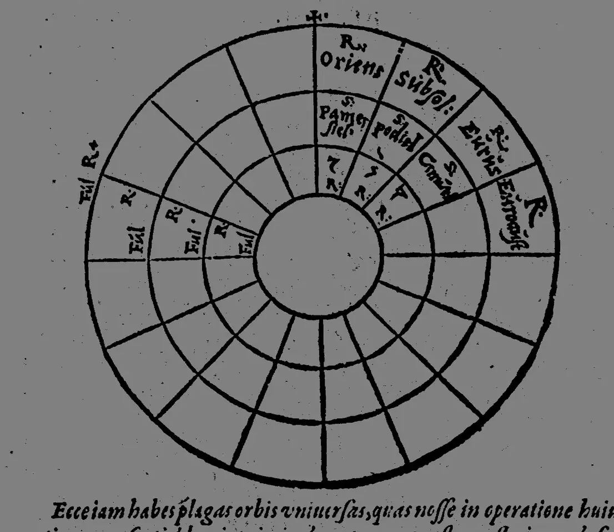
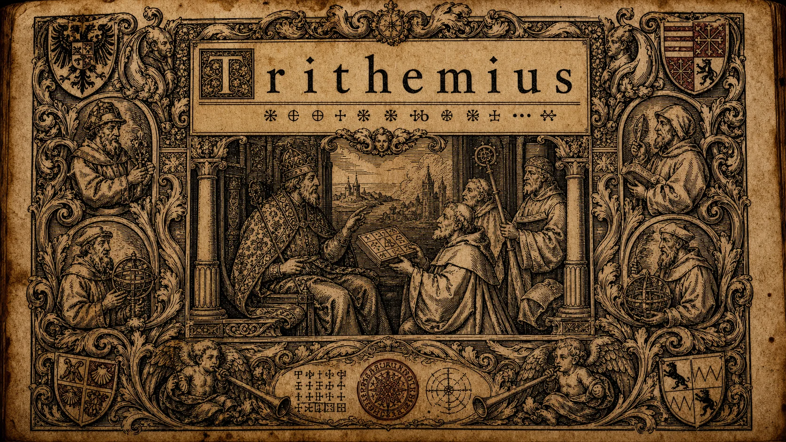

An English edition
Trithemius Corpus
Johannes Trithemius (1462–1516) — Benedictine abbot, bibliographer, and the first author of a printed book on cryptography — has sat in early-modern print for five centuries with no English edition. This project gives a readable English of 29 of his works, across 47 printed editions, 23 of them in English for the first time — each set beside its Latin source, with the cipher tables shown against the original page scans.


Start here: first in English
-
Trithemius Sui Ipsius Vindex — Trithemius, Vindicator of Himself, 1616 first English
Trithemius Sui Ipsius Vindex — "Trithemius, Vindicator of Himself" — is the abbot's apologetic answer to the accusations of demonic magic that dogged his last decade. His Steganographia, circulated in manuscript from the late 1490s and reaching readers it was not meant to reach — Carolus Bovillus among them — had been read at face value as a manual of necromancy, and the charge clung to him; the Vindex, printed posthumously in 1616, gathers his own protestations of orthodoxy alongside the testimony of allies, insisting that the Steganographia is cryptography dressed as conjuration, not magic at all. It is the apologetic counterpart to the Steganographia (prdl-24395) and the Clavis Generalis Triplex (prdl-70281) elsewhere in this corpus.
-
Liber de Scriptoribus Ecclesiasticis — On Ecclesiastical Writers, 1494 first English
Liber de Scriptoribus Ecclesiasticis — "On Ecclesiastical Writers" — is Trithemius's pioneering bio-bibliography of Christian authors, from the apostolic age to his own century, in roughly a thousand numbered entries: each author given a short biography and a list of writings. Completed at Sponheim in 1494 and printed at Basel by Johann Amerbach in the same year, it continues the catalogue tradition of Jerome, Gennadius, and Isidore on a far larger scale, and it stands as a founding text in the history of bibliography — the first large-scale alphabetical bio-bibliography of Christian literature, and the work for which Trithemius was best known in his lifetime.
-
De Republica Ecclesiae et Monachorum Ordinis — On the Commonwealth of the Church and the Order of Monks, 1493 first English
De Republica Ecclesiae et Monachorum Ordinis — "On the Commonwealth of the Church and the Order of Monks" — is one of Trithemius's monastic-reform tracts, treating the right ordering of the religious life within the wider body of the Church. It belongs to the cluster of reform writings he produced as abbot of Sponheim in the 1490s — alongside De Statu et Ruina Monastici Ordinis and De Triplici Regione Claustralium — pressing for the restoration of strict Benedictine observance against the lax monasticism of his day. Its scope is wider than the purely cloistral: it sets the monastery within the commonwealth of the Church and the duties of the religious life within it.
-
De Cura Pastorali — On Pastoral Care, 1496 first English
De Cura Pastorali — "On Pastoral Care" — is Trithemius's treatise on the duties of those charged with the care of souls, in the long tradition of clerical-formation literature descending from Gregory the Great's Regula Pastoralis. It sits among his writings on the priestly and clerical life — alongside Institutio Vitae Sacerdotalis and De Sacerdotum Vita Instituenda — rather than his strictly monastic-reform tracts, though the two strands overlap in his work. Its concern is the rector's responsibility for those under his cure: preaching, correction, the example of life, and the burden of office.
-
De Statu et Ruina Monastici Ordinis — On the State and Ruin of the Monastic Order, 1493 first English
De Statu et Ruina Monastici Ordinis — "On the State and Ruin of the Monastic Order" — is Trithemius's diagnostic of what had gone wrong with fifteenth-century Benedictine life. He wrote it as abbot of Sponheim in the mid-1490s, at the height of his reform programme: a generation after the Bursfelde Congregation had begun reorganising German monasticism around strict observance, he surveys the decay — property-holding, absenteeism, the collapse of the common life — and prescribes the return to the Rule. It is the sharpest of his reform tracts, and the one in which his disappointment is least concealed; it cost him goodwill among the abbots he had hoped to lead.
-
Compendium sive Breviarium primi voluminis Annalium sive Historiarum de origine regum et gentis Francorum — A Compendium or Breviary of the First Volume of the Annals or Histories, on the Origin of the Kings and People of the Franks, 1515 first English
Compendium sive Breviarium primi voluminis Annalium sive Historiarum de origine regum et gentis Francorum — "A Compendium of the First Volume of the Annals on the Origin of the Kings and People of the Franks" — is Trithemius's condensed history of Frankish origins, dedicated to Lorenz von Bibra, Bishop of Würzburg. It is an abridgment of the larger annalistic project of his Würzburg years, and it shares the legendary-genealogical method characteristic of his historiography: a Trojan / Sicambrian descent for the Franks that later scholarship has treated with considerable caution. The compendium form makes it the most readable entry point into his Frankish history, set out year by year from the origins to the Carolingians.
-
De Origine, Progressu et Laudibus Ordinis Fratrum Carmelitarum — On the Origin, Progress, and Praises of the Order of Carmelite Brothers, 1494 first English
De Origine, Progressu et Laudibus Ordinis Fratrum Carmelitarum — "On the Origin, Progress, and Praises of the Order of Carmelite Brothers" — is Trithemius's defence of the Carmelite order, written in 1492. It rehearses the order's claimed descent from the prophet Elijah on Mount Carmel — a foundation legend the mendicant orders pressed hard in the fifteenth century against humanist and conciliar scepticism — and catalogues its worthies in the bio-bibliographical manner Trithemius would soon make his own in the De Scriptoribus Ecclesiasticis. It belongs to the hagiographic-defensive side of his early output, and shows the historian of orders already at work a decade before the great chronicles.
-
De Laudibus Sanctissimae Matris Annae — In Praise of the Most Holy Mother Anne, 1494 first English
De Laudibus Sanctissimae Matris Annae — "In Praise of the Most Holy Mother Anne" — is Trithemius's treatise honouring St Anne, the mother of the Virgin Mary and a focus of intense late-medieval devotion. He wrote it at Sponheim with a dedicatory letter to Rumold Laupach dated 1 July 1494, and it appeared with a cluster of commendatory poems on the Holy Kindred — the extended family of Christ that Anne, thrice-married in the apocryphal tradition, was held to have matriarched. It is a characteristic piece of his early Sponheim Marian-hagiographic output, leaning on the legendary material the Reformation would soon sweep away.
-
Liber de Triplici Regione Claustralium et Spirituali Exercitio Monachorum — On the Threefold Region of Cloister-dwellers and the Spiritual Exercise of Monks, 1498 first English
Liber de Triplici Regione Claustralium et Spirituali Exercitio Monachorum — "On the Threefold Region of Cloister-dwellers and the Spiritual Exercise of Monks" — is Trithemius's ascetic guide to the monastic life, mapping the monk's progress through three "regions" or stages of interior discipline: purification for beginners, illumination for the proficient, and union with God for the perfect — a scheme drawn from Pseudo-Dionysius and the Victorines and adapted to Benedictine observance. He completed it in manuscript in 1497; it is one of the central texts of his Sponheim reform programme, alongside the Sermones ad Monachos and De Statu et Ruina Monastici Ordinis.
-
Institutio Vitae Sacerdotalis (Mainz, 1499) — On the Institution of the Priestly Life (Mainz, 1499), 1494 first English
Institutio Vitae Sacerdotalis — "The Formation of the Priestly Life" — is Trithemius's treatise on the discipline, study, and conduct proper to priests. It is part of the clerical-formation strand of his work — alongside De Cura Pastorali and De Sacerdotum Vita Instituenda — that runs parallel to the Benedictine reform writings. Its concern is the secular and regular clergy's interior and moral preparation rather than monastic observance as such: how a priest is to live, read, pray, and conduct himself in office.
-
Admonitiones / Exhortationes ad Monachos — Admonitions and Exhortations to Monks (later collected reprint), original date uncertain first English
Admonitiones / Exhortationes ad Monachos — "Admonitions and Exhortations to Monks" — gathers Trithemius's monastic-reform addresses: calls to stricter observance of the Benedictine Rule, to the interior life of the cloister, and to the duties of the professed monk. They belong to the reforming side of his abbacy — of a piece with the Sermones et Exhortationes ad Monachos and De Triplici Regione Claustralium — and they show the abbot as pastor rather than polymath, urging his monks toward the discipline that his historical and cryptographic works were sometimes thought to have distracted him from.
-
Liber Octo Quaestionum ad Maximilianum Caesarem — A Book of Eight Questions to Emperor Maximilian, 1515 first English
Liber Octo Quaestionum ad Maximilianum Caesarem — "A Book of Eight Questions to Emperor Maximilian" — is Trithemius's reply to the eight questions Maximilian put to him at Boppard: on faith and understanding, on the faith necessary for salvation, on the miracles of unbelievers, on witches and harmful magic, and on related matters. Composed in 1508, it is his central statement on witchcraft and the source from which later demonological writers drew heavily. The questions are set out in an enumerated table and answered in sequence, in the blend of scholastic authority and pastoral caution that marks his shorter treatises.
The corpus by genre
-
Cryptography & the Occult
6 texts
Cryptographic, hermetic, demonological, and angelological works. Includes the Polygraphia treatises, the Clavis works, the Sigilla, and the Liber Octo Quaestionum (responses to Maximilian on witchcraft).
-
Monastic Reform
8 texts
Works on monastic observance, the state of the orders, claustral life, exhortations to monks, and chapter resolutions. Includes De Laude Scriptorum Manualium (manuscript culture is a monastic register).
-
Marian & Hagiographic
3 texts
Marian devotion (especially the Anne / immaculate-conception tradition), Carmelite hagiography.
-
Bibliography & History
4 texts
Catalog and biographical works — De Scriptoribus Ecclesiasticis and the Spanheim/Würzburg collected-works compilations and chronicles.
-
The Priestly Life
3 texts
Pastoral and priestly works — pastoral care, the formation of priests, the priestly vocation.
-
Devotional
3 texts
Contemplative and ascetic works — divine love, the vanity of human life, conversion of the mind to God.
-
Apologetic
1 text
Self-defense / apologetic works (one work: Sui Ipsius Vindex).
-
Verse
1 text
Occasional Latin verse (one work: the bald-men ecloga to Maximilian).
Every translation here is machine-produced and remains provisional unless a page explicitly records human review. Automated checks are documented on the audit page and in the methodology; they are triage evidence, not certification. for any passage you intend to quote, check the Latin.